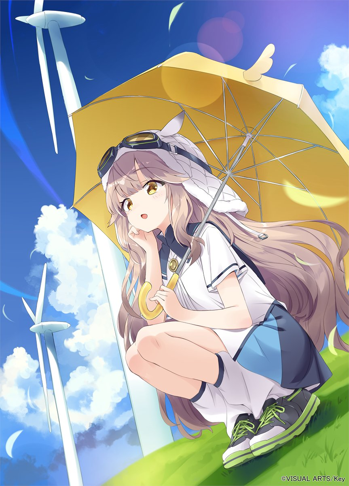
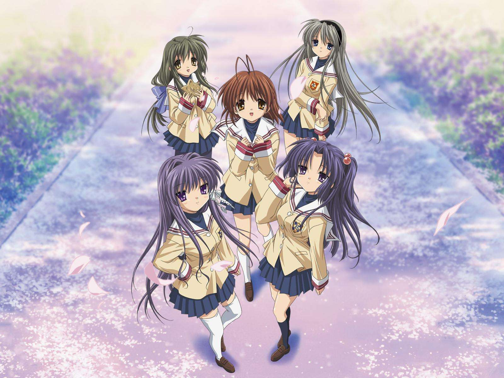

我相信“结构”比“装饰”重要
我做作品时会先想：读者是谁？他要在 10 秒内看到什么？他会不会迷路？ 我喜欢把重点放在层级、间距、对比度、节奏感上——这些看起来很“普通”，但最能体现认真。
我也会给自己一个很具体的标准：页面打开后，标题要像路标一样清楚；段落要像呼吸一样舒服； 图片要像记忆一样有位置。
我的习惯
先规划 → 再落地 → 再打磨
我是那种“心里话不太会藏”的人：喜欢把事情讲清楚、做完整。
我对页面和作品的要求也一样——清晰、耐看、可信。
我是 Key 的粉丝：不是只为了“催泪”，而是喜欢它那种
安静但有力量的表达。
「約束は、風のなかに。」
对我来说，这不是一句台词，而是一种方向感：做事别乱，做自己要真。

我不追求花哨，追求“能一眼看懂”。把复杂拆成步骤，然后一步一步做到位。
我做作品时会先想：读者是谁？他要在 10 秒内看到什么？他会不会迷路？ 我喜欢把重点放在层级、间距、对比度、节奏感上——这些看起来很“普通”，但最能体现认真。
我也会给自己一个很具体的标准：页面打开后，标题要像路标一样清楚；段落要像呼吸一样舒服； 图片要像记忆一样有位置。

我从 Key 学到的不是“煽情”，而是克制：把最重要的东西留给最后的那一下。

Key 的作品经常是：不把话说满，却能让你记很久。 我也想做出这种“余韵型”作品：不是靠大声吸引注意，而是靠细节让人愿意停留。
所以我偏爱深色背景 + 明亮标题 + 低饱和图片，让信息像灯一样亮出来，而不是把屏幕塞满。 这也很像我本人：外表冷静，但心里其实很认真。
我也会拖延、会烦，但我有“重新启动”的按钮：把下一步做出来。
我一旦进入状态，就会很想把东西做完、做漂亮。 我给自己的规则是：每次打开项目，至少改进一个点——哪怕只是排版、按钮、或一张图的摆放。

我更相信“持续推进”。 哪怕一天只前进一点点，只要不断档，最后就会变成你自己都惊讶的成果。
我喜欢直接、真诚的交流；不太会拐弯抹角，但我会认真对待关系。

做页面我会想：别人点一次就能到吗？能看懂吗？会不会烦？ 做人也一样：我希望我给别人的感觉是清楚、可靠、好沟通。
我不是那种很会说漂亮话的人，但我会用行动补上。 如果我说要做，我就会把它做到可交付。
不是幼稚的甜，而是清澈、明亮、带一点点回头看的温柔。
我喜欢那种“看起来很轻，但其实很深”的感觉。 这也是我做自我介绍页面的目标：醒目、好读、但不刺眼——让内容站出来，而不是特效。
（你现在看到的深色渐变、发光边框、留白与大标题，就是我对这种氛围的实现。）

这些图不是“摆设”，而是我给自己设定的情绪色盘：风、光、云、夏天、以及能坚持下去的理由。
